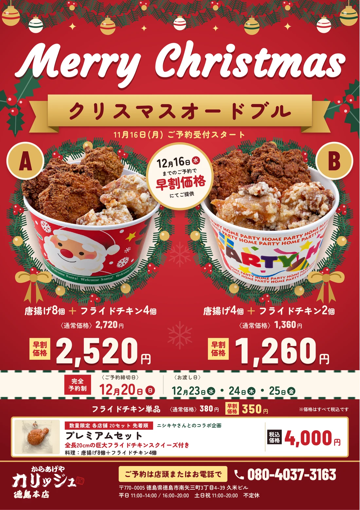

直した所
- iPhoneでPDFを開くと、早割の丸のまわりに四角い影が出ていたのを直した（A・Bの丸と見出しの帯も同じ作りだったので直した）
- 見出しのリボンの折り返しを作り直した（端を奥へ回し、折り目の影を入れた）
- 予約の仕方を黄色の札にして電話番号の横へ、字も大きく
- Merry Christmas の上をたわんだガーランドと吊り玉で飾り、上の地を明るく
- A・Bの字を丸の中心に
- Merry Christmas を紙の端から離した（断裁で切れる位置だった）
- y のはねがリボンに隠れていたのを見えるように
- 見出しのリボンの字を左右の真ん中に
- 受付開始の行を少し大きくし、上下に余白
- A・Bの丸を料理にかからない方へ寄せた
- リースのリボンを器の絵から外した
- 2つの器の底の高さをそろえ、リースを左右対称に
- 丸に半分隠れていた金の玉を外した
- 値段と見出しの裏にあった雪を外した
- 締切日とお渡し日の、見出しと数字の高さをそろえた
- プレミアムの中身の書き方をA・Bとそろえた（唐揚げ8個＋フライドチキン4個）
- スクイーズの袋が枠の下へはみ出していたのを収めた
- 店舗の帯の上が詰まっていたのを空けた
- 上の飾りの金の玉を左右対称に